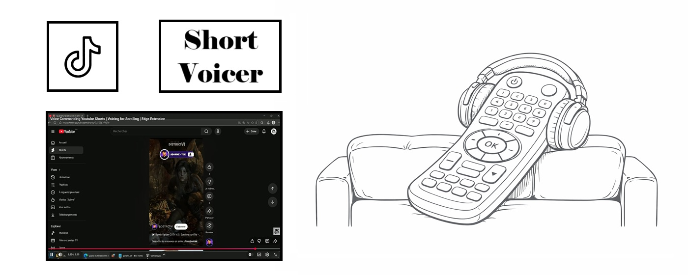
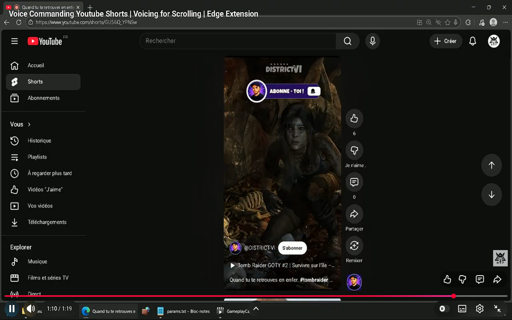

Shorts Voicer
Voice commanding your Youtube shorts!
This Microsoft Edge extension is made to voice commanding Youtube shorts with your microphone.
By commanding with spelling "Next", "Previous", "Like", "Unlike", and "Play", you can easy peacy
command the doom scroll, i.e. watching your shorts under Youtube.
